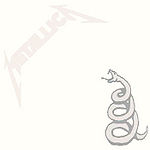
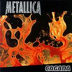
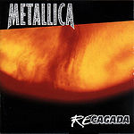
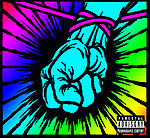

De: La Frikipedia, la enciclopedia extremadamente seria.
De: La Frikipedia, la enciclopedia extremadamente seria. De: La Frikipedia, la enciclopedia extremadamente seria.
| De la serie Profetas de la única religión: | |||
| Bob Rock | |||
| |||
| Cuándo lo parieron | El dia de su cumpleaños | ||
| Tierra que lo vio joder | Pendejolandia | ||
| Cuándo empezo a metalear | Cuando nacio el Metal comercial | ||
| Forma de crear adicción | | ||
| Bandas en las que ha molestado | Mierdallica | ||
| Atentados contra la humanidad | Load, Reload, Some Kind of Shit | ||
| Cónyuge | No se conoce, se cree que la vendió | ||
| Otros datos | Se cree que murio en manos de San Cliff Burton | ||
«Es el mas grande hijo de puta de la historia»
~ Fan de Metallica sobre Bob Rock
«WRAAAAAAAAAAAAAAAAAAAAAAAAAAAAAAAAAGHHHHHHHHHHHHHHHHH!!!!!!!!!!!»
~ Cliff matando a Bob por arruinar Metallica
«El Metal ya no mola, el Mainstream es el futuro de la musica »
~ Bob Rock lavandole el cerebro aconsejando a Lars
«A mi guitarra le faltan 2 cuerdas»
~ Bob Rock mientras graba el St. Anger
«Tendremos que hacer mimica»
~ Bob Rock dejando que el publico le meta su bajo por el chulo
Robert Jens Rock:Fue el encargado de comercializar producir con Mötley Crüe en Dr. Feelgood y con Metallica durante los albumes Metallica, Load, Reload y Saint Anger
Se cree que Bob Cock Rock ( tambien conocido como Pop Rock por volver populacho todo lo que toca) nació en Canada, hecho que no ha podido probarse por que ni siquiera alla lo quieren. Lo unico que se sabe de el es que finje trabajar como productor y mezclador desde 1979 y es directamente responsable de la ruina mejora del sonido en muchas bandas de metal, tales como Mötley Crüe y Bon Jovi.


Nacio en Canada un 31 de Febrero de 1945, su padre Pancho Rock vendia tamales de elote afuera de la iglesia y su madre se dedicaba a violar niños, por la gran admiracion que sentia por Michael Jackson ; se cree que su nacimiento se debe a que sus padres estaban tan borrachos, fumados, golpeados en la cabeza y sodomisados que no se dieron cuenta ni de que tenian sexo.de pequeño violo a todos sus hermanos NOOOOOO!!!!!
Durante su juventud se dedicaba a vernder revistas porno afuera de la iglesia, hasta que un dia el obispo lo vio; Con las revistas que le vendio se compro un auto ultimo modelo y pudo entrar a la escuela para niñas de su vecindario. En la escuela los demas lo discriminaban por sus claras tendencias gays por el metal, asi que un dia despues de ser violado por el nerd de la clase se decidio a volverse musculoso y popular, pero nunca lo logro asi que prefirio volverse el mas inteligente de su clase... estuvo cerca solo le faltaron 5 puntos para el diez.
Despues se enlisto en el ejercicto donde tuvo una sobresaliente carrera limpiando los baños, hasta que un enfrentamiento con una ardilla lo dejó lesionado permanentemente de su cerebro, provocando su desercion y union al circo. Realmente su carrera en el circo fue breve, durante su primer acto dejo caer uno de los machetes en llamas con lo que hacia malabares sobre un niño de 5 años dejando como Freddy Krugger ; Despues de esto comenzo su fructifera carrera como productor.
| Imagen | Nombre | Descripción | Opinion de la Humanidad |
|---|---|---|---|

|
Maxima obra de Bob Rock y con la que consiguió su puesto como productor con Metallica, realmente es un buen trabajo (Comparado con los siguiente) pero aun asi podemos maldecir hasta el cansancio a Lars por contratar a Bob. La portada es un
|
Poser: ¿Dr. FeelGood? ¿Que no es un programa de television?
Jebi: Mmm... un disco bastante aceptable | |
|  | |
Llamado generalmente "Metallica" por los posers. Primer y unico "buen" trabajo de Bob
|
Poser: ¡Que buen disco, me encanto! (Niña de 8 años promedio)
Jebi: Esta mas o menos normalita pero aun asi es COMERCIAL |
|  | El mas grande desastre musical de toda la historia de Metallica, solo comparable con la muerte de Cliff, O con poner un pez a tocar bateria, un gusano a tocar bajo, una caca a tocar guitarra y poner un ebrio gay (IP anónima) a cantar. La portada es una imagen del tipico desayuno de un hotel 5 estrellas con un "Cagada" en la esquina. Todas las canciones de este album son la misma porqueria, pero las mas conocidas son "Mama Gay" y "Villano de Dia"
|
Poser: Es uno de los mejores albumes de Metallica con un sonido accesible y mas complejo.
Jebi: Es una sobrerana porqueria... MASTER!!! MASTER!!!' | |
|  | Es basicamente lo mismo que su hermano menor Load solo que con
|
Poser: Wow que buena continuacion del Load.
Jebi: WTF? | |
|  | Ultimo album de estudio de Bob Rock con Metallica y tambien el mas Nu, esta
|
Poser:Que disco tan agresivo.
Jebi: Hijos de puta!!!!! (Golpeando su cabeza contra una mesa) |
Cansado de no haber hecho nada en su vida ideo un plan para destruir a Metallica y asi ser violado y sodomisado recordado por lo jebis por la eternidad:
Autor(es):